מדריך הפעלה מקיף למבצע, למאשר ולמנהל — מהבדיקה ועד האישור, במערכת עצמאית שעובדת ללא אינטרנט.
בדיקהבקרהעקיבותעבודה ללא רשת
גרסת תוכנה: v1.0.0גרסת מדריך: 1.0עודכן: נובמבר 2026סיווג: בלמ״ס
@@ch1@@
1
מבוא למערכתמה היא VERO, איך היא בנויה, ומהם המושגים שחשוב להכיר לפני שמתחילים
פרק זה נותן לך תמונה כוללת של המערכת עוד לפני שנגענו בכפתור אחד: מה המערכת עושה, מי המשתמשים בה, איך מאורגנים המידע והבדיקות, ומהו מסלול העבודה המלא של בד״ח — מרגע פתיחתו ועד אישורו הסופי. מומלץ לקרוא אותו גם למי שלא יעבוד עם כל חלקי המערכת.
1.2 מהי VERO ומה מטרתה
VERO היא מערכת דיגיטלית לניהול בדיקות ובקרה (בד״חים), שנועדה להחליף את טופסי הנייר. במקום למלא טופס ידני, לצלם אותו ולתייק אותו בקלסר, המבצע ממלא את הבדיקה על מסך מגע, חותם דיגיטלית, והבד״ח עובר באופן מסודר ומתועד לאישור. כל שלב נשמר עם שם המבצע, התאריך והשעה המדויקת.
המטרות המרכזיות של המערכת:
תיעוד מלא ואמין — כל פעולה (סימון תקין/לא תקין, חתימה, אישור, החזרה לתיקון) נרשמת ביומן ביקורת שאינו ניתן לשינוי.
מניעת טעויות — המערכת לא מאפשרת להעביר בד״ח לאישור לפני שכל הסעיפים סומנו ושני המבצעים חתמו, ולא מאפשרת למבצע לאשר את עצמו.
אחידות — כל הבדיקות נבנות מתוך תבנית (בד״ח) מרכזית שמנהל המערכת מגדיר, כך שכל המבצעים עובדים לפי אותו נוסח מדויק.
עבודה עצמאית בשטח — המערכת פועלת ללא אינטרנט כלל. כל הנתונים נשמרים במכשיר עצמו (ראה פרק 9).
עקיבות וניהול ידע — היסטוריה, דוחות, לוח בקרה, הסמכות ותקלות במעקב — הכול במקום אחד.
1.3 מבנה המערכת
VERO היא יישום אחד שרץ על המכשיר (טאבלט או מחשב) ואינו תלוי בשרת חיצוני. הוא בנוי משלושה חלקים עיקריים שהמשתמש פוגש:
שכבת הביצוע
המסכים שבהם המבצע ממלא בד״ח, המאשר חותם, והמנהל מנהל את המערכת.
מסד נתונים מקומי
כל הבד״חים, החתימות, התמונות, המשתמשים וההגדרות נשמרים בתוך המכשיר (IndexedDB), ושורדים כיבוי והדלקה.
בד״ח (בדיקה) הוא טופס הבדיקה המרכזי במערכת. כל בד״ח מורכב משורה של סעיפי בדיקה ומרכיבי תוכן נוספים (כותרות, הוראות, תמונות ייחוס, רשימות ציוד וטבלאות מדידה) בסדר שמנהל המערכת קבע. עבור כל סעיף המבצע מסמן תקין או לא תקין, ובמקרה של אי-תקינות מוסיף פירוט ותמונה.
מאפיין מרכזי של הבד״ח הוא ה־Snapshot (תצלום קפוא): ברגע שנפתח בד״ח, נשמרת בו הגרסה המדויקת של התבנית כפי שהייתה באותו רגע. אם מנהל המערכת ישנה את התבנית מחר, הבד״ח שכבר נפתח לא ישתנה — כך מובטח שתיעוד הבדיקה נאמן למה שבוצע בפועל.
1.5 סוגי המשתמשים (הרשאות)
במערכת שלוש הרשאות. למשתמש יכולה להיות יותר מהרשאה אחת (למשל מנהל שהוא גם מבצע).
הרשאה
מה מותר לה
מבצע Performer
פותח בד״חים חדשים, ממלא סעיפי בדיקה, מבצע מדידות, חותם, ומעביר לאישור. מתקן בד״ח שהוחזר. רשאי לבצע בדיקה רק במערכת ובדרג שבהם הוא מוסמך.
מאשר Approver
בודק בד״חים שהוגשו, מאשר וחותם, או מחזיר לתיקון עם הערה. מגדיר תקלות במעקב, ויכול להעביר סעיפים לטיפול דרג גבוה יותר. אינו יכול לאשר בד״ח שהוא עצמו ביצע.
מנהל Admin
הרשאת-על. מנהל משתמשים, מערכות, דרגים, תבניות בד״ח, הסמכות, מבחנים, גיבוי, הגדרות ויומן ביקורת. רואה הכול.
חשוב לדעתההרשאות נאכפות בלב המערכת (בשכבת השירות) ולא רק בהסתרת כפתורים — כך שגם פנייה ישירה לא תעקוף אותן.
1.6 מערכות, מספרי מערכת, תתי־מערכות ודרגים
המידע במערכת מאורגן בהיררכיה קבועה. חשוב להבין אותה, כי לפיה נבחר הבד״ח הנכון בכל בדיקה:
מושג
משמעות
דוגמה
סוג מערכת
הרמה העליונה — סוג הציוד/המתקן הנבדק.
מערכת א׳
מספר מערכת (יחידה)
המופע הספציפי שנבדק בתוך סוג המערכת.
מערכת 1, מערכת 2
תת־מערכת
רכיב בתוך המערכת שנבדק/נמדד בנפרד (מופיע כקבוצת שדות או כשורה בטבלת מדידה).
משאבה A, מעגל הזנה
דרג בדיקה
סוג/עומק הבדיקה. הדרג גם קובע איזה בד״ח ייפתח. הדרגים היררכיים — דרג גבוה כולל את כל שתחתיו.
דרג א׳ … דרג ד׳
כאשר מבצע פותח בד״ח חדש, הוא בוחר סוג מערכת ← מספר מערכת ← דרג, והמערכת מציגה את הבד״ח המתאים. אם קיימת רק אפשרות אחת בשלב מסוים, המערכת מדלגת עליו אוטומטית.
1.7 מושגים וקיצורים
בד״ח
טופס בדיקה/בקרה — יחידת העבודה המרכזית.
מבצע 1 / מבצע 2
כל בדיקה מחייבת שני מבצעים מוסמכים שחותמים שניהם.
מאשר
הגורם שבודק ומאשר את הבד״ח לאחר הביצוע.
Snapshot / תצלום קפוא
שמירת גרסת התבנית בתוך הבד״ח ברגע פתיחתו.
תקלה במעקב
תקלה שהוגדרה ע״י מאשר כפתוחה, ומוצגת בבד״חים הבאים של אותה מערכת עד לסגירתה.
דרג מטפל
דרג גבוה שאליו מועברים סעיפים לא תקינים לטיפול.
הסמכה
אישור שלמשתמש מותר לבצע בדיקות במערכת ובדרג מסוימים, בעלת תוקף בזמן.
בלמ״ס
בלתי מסווג — רמת הסיווג המוצגת על המסמכים.
PDF / Excel
פורמטי הפקת הדוח להדפסה ולניתוח.
1.8 תהליך העבודה הכללי
זהו המסלול המלא של בד״ח. כל פרק בהמשך מרחיב שלב מתוכו:
פתיחת בד״ח ע״י מבצע←מילוי הסעיפים + מדידות←בחירת מבצע 2 + שתי חתימות←העברה לאישור←אישור מאשר וחתימה
אם המאשר מוצא ליקוי, הוא יכול להחזיר את הבד״ח לתיקון (עם הערה) או להעביר סעיפים לדרג מטפל. לאחר תיקון ותיעוד — הבד״ח חוזר לאישור. בד״ח מאושר הופך למסמך סופי נעול שניתן להפיק ממנו PDF ו־Excel.
נמצא ליקוי←החזרה לתיקון / העברה לדרג מטפל←תיעוד הטיפול + חתימות←אישור חוזר←מאושר
@@ch2@@
2
התקנה והתחברותדרישות המערכת, הפעלה ראשונה, התחברות, נעילה ויציאה — כולל עבודה ללא אינטרנט
2.1 דרישות מערכת
VERO רצה כיישום Windows עצמאי (חבילת Portable) או בדפדפן, ואינה דורשת התקנת שרת או חיבור לרשת.
רכיב
דרישה
מערכת הפעלה
Windows 10 (Build 1903 / 18362) ומעלה, 64-bit.
הרשאות
אינה דורשת הרשאות מנהל (Administrator) להרצה.
אינטרנט
אינו נדרש כלל — לא בהתקנה ולא בהפעלה.
מסך
מומלץ מסך מגע (טאבלט) עם עט; עובד גם עם עכבר ומקלדת.
אחסון נתונים
הנתונים נשמרים מקומית ומופרדים מקבצי התוכנה — אינם נמחקים בעדכון גרסה.
2.2 התקנת התוכנה במחשב ובטאבלט
קבלת החבילה. קבלו מגורם המחשוב את חבילת VERO-Portable (קובץ ZIP) דרך אמצעי מאושר.
חילוץ. לחצו לחיצה ימנית על ה-ZIP ובחרו Extract All (חלץ הכול). תיווצר תיקייה בשם VERO.
הפעלה. היכנסו לתיקייה והפעילו את הקובץ VERO.exe. אין צורך בהתקנה ובהרשאות מנהל.
השארת הקבצים יחד. יש להשאיר את VERO.exe בתוך התיקייה עם שאר הקבצים; אין להעביר אותו לבדו.
טיפכדי שתהיה גישה נוחה — לחצו ימני על VERO.exe ← "שלח אל" ← "שולחן העבודה (צור קיצור דרך)".
2.3 הפעלה ראשונית והתחברות
בהפעלה הראשונה המערכת מכינה את מסד הנתונים המקומי ויוצרת משתמש מנהל ראשוני. לאחר מכן יופיע מסך ההתחברות.
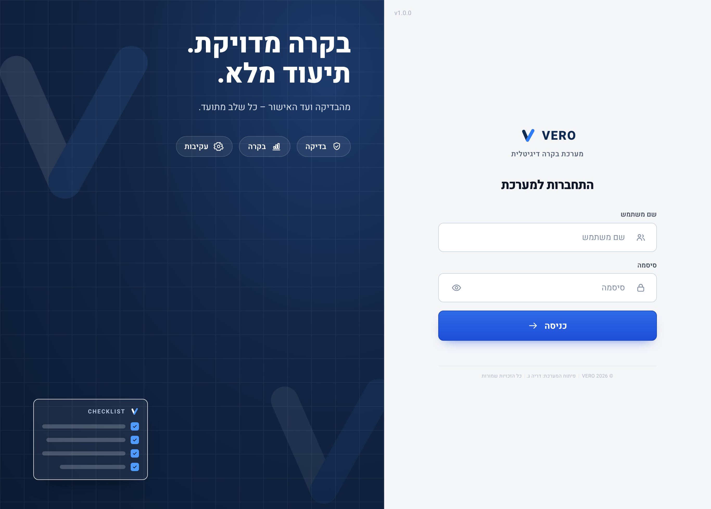
מסך ההתחברות. משמאל — פאנל המותג; מימין — טופס הכניסה עם שדות שם משתמש וסיסמה.
שם משתמש. הקלידו בשדה שם משתמש (אייקון דמות).
סיסמה. הקלידו את הסיסמה. ניתן ללחוץ על אייקון העין כדי להציג/להסתיר אותה.
כניסה. לחצו על הכפתור כניסה. בהצלחה — תועברו למסך הבית.
פרטי כניסה ראשונייםבהתקנה חדשה קיים מנהל ראשוני: שם משתמש admin, סיסמה admin123. יש לשנות את הסיסמה מיד לאחר הכניסה הראשונה (ניהול משתמשים ← עריכה ← סיסמה חדשה). אין סיסמאות אישור מובנות במערכת.
2.4 מסך נעילה ויציאה מהמערכת
בראש כל מסך מוצגים שם המשתמש והרשאותיו, וכפתור יציאה. לחיצה עליו מנתקת את המשתמש ומחזירה למסך ההתחברות — ללא איבוד נתונים (בד״חים וטיוטות נשמרים).
ניתוק מנהל אוטומטי: ניתן להגדיר שמנהל ינותק אוטומטית לאחר זמן חוסר-פעילות (ברירת מחדל 10 דקות) — ראה פרק 6, הגדרות.
החלפת משתמש: לפני שמאשר חותם, עליו להתחבר בחשבונו האישי (יציאה והתחברות מחדש). כך המערכת יודעת בדיוק מי אישר.
2.5 שימוש בעט מגע
המערכת תוכננה למסך מגע. כל הכפתורים גדולים ונוחים ללחיצה באצבע או בעט. החתימות (מבצע ומאשר) נעשות בציור ישיר על המסך באמצעות העט — אין צורך להקליד שם; זהות החותם נלקחת מהמשתמש המחובר.
2.6 עבודה ללא אינטרנט
VERO עובדת תמיד במצב לא-מקוון. אין צורך בחיבור רשת כדי להתחבר, למלא בד״חים, לחתום, לאשר או להפיק דוחות. כל פעולה נשמרת מיידית במכשיר. פרק 9 מרחיב על שמירת הנתונים ועל העברתם בין מכשירים.
2.7 תקלות התחברות נפוצות
הודעה / מצב
פתרון
"שם משתמש או סיסמה שגויים, או שהמשתמש אינו פעיל."
ודאו הקלדה נכונה (שפת מקלדת). אם המשתמש הושבת — פנו למנהל להפעלתו מחדש.
שכחתי סיסמה
אין שחזור עצמי. מנהל המערכת מאפס סיסמה דרך ניהול משתמשים.
המסך לא נטען / לבן
סגרו והפעילו מחדש את VERO.exe. אם נמשך — פנו לפרק 12 (פתרון תקלות).
@@ch3@@
3
היכרות עם הממשקמסך הבית, התפריטים, האייקונים, צבעי הסטטוס ודרכי הניווט
3.1 מסך הבית
מסך הבית הוא נקודת המוצא. הוא מציג ברכה אישית, תמונת מצב מהירה, וכרטיסיות פעולה. התוכן משתנה לפי הרשאת המשתמש — מבצע יראה "בד״ח חדש", מאשר יראה גם "ממתינים לאישור" ו"תקלות במעקב", ומנהל יראה גם כלי ניהול.
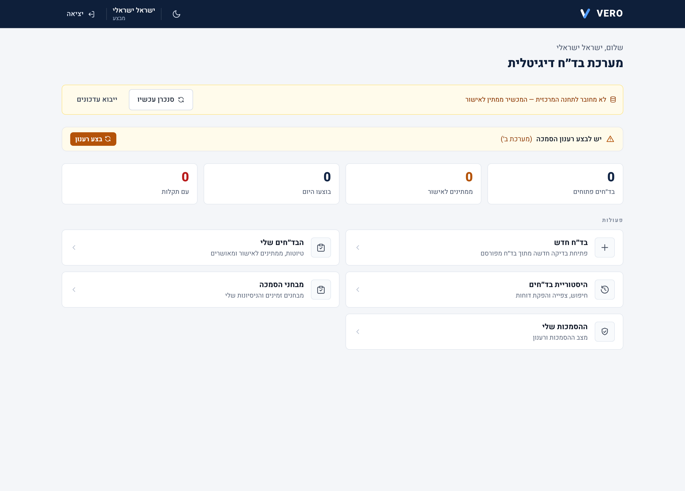
מסך הבית (מבצע). למעלה — ברכה ומצב סנכרון; באמצע — ארבעה מוני מצב (בד״חים פתוחים, ממתינים לאישור, בוצעו היום, עם תקלות); למטה — כרטיסיות הפעולה.
מתחת לכותרת, בכל מסך פנימי, יש סרגל ניווט עם כפתור חזרה ושובל פירורי-לחם (Breadcrumbs) שמראה היכן אתם במערכת.
3.3 כרטיסיות הפעולה
במסך הבית מוצגות כרטיסיות גדולות לכל פעולה עיקרית. כל כרטיסייה כוללת אייקון, כותרת, תיאור קצר, ולעיתים מונה (למשל מספר הבד״חים הממתינים לאישור). הכרטיסיות הזמינות לפי הרשאה:
כרטיסייה
למי
פעולה
בד״ח חדש
מבצע / מנהל
פתיחת בדיקה חדשה.
הבד״חים שלי
הכול
טיוטות, ממתינים ומאושרים שלי.
ממתינים לאישור
מאשר / מנהל
תור האישור.
תקלות במעקב
מאשר / מנהל
תקלות פתוחות לפי מערכת.
היסטוריית בד״חים
הכול
חיפוש, צפייה והפקת דוחות.
מבחני הסמכה
הכול
מבחנים זמינים / ניהול מבחנים.
ההסמכות שלי
הכול
מצב הסמכות ורענון.
ניהול בד״חים / משתמשים / לוח ניהול
מנהל
כלי הניהול.
3.4 צבעי סטטוס
המערכת משתמשת בצבעים עקביים כדי לתקשר מצב במבט אחד:
צבע
משמעות
היכן
ירוק
תקין / מאושר / בתוקף
סעיף תקין, בד״ח מאושר, הסמכה בתוקף.
אדום
לא תקין / תקלה / פג תוקף
סעיף לא תקין, בד״ח עם תקלות.
כתום
ממתין / דורש טיפול
ממתין לאישור, נדרש רענון, תקלה במעקב.
כחול
מידע / פעולה
כפתורים, קישורים, הדגשות.
אפור
מושבת / ריק / טיוטה
פריט מושבת, טיוטה שלא פורסמה.
3.5 הודעות והתראות
הודעות רגעיות (Toast): מופיעות לרגע בפינת המסך לאחר פעולה ("החתימה נשמרה", "הבד״ח אושר ונעל").
כרזות (Banners): פסים קבועים בתוך המסך — למשל "הבד״ח הוחזר לתיקון", או כרזת תקלה במעקב.
חלון רענון הסמכה: בכניסה, אם נדרש רענון, יופיע חלון התראה חד-פעמי לסשן. סגירתו בלחיצה על הבנתי.
3.6 חיפוש וסינון
במסכי רשימה (היסטוריה, הסמכות) יש שורת חיפוש ומסננים — לפי טקסט חופשי, סטטוס, שלב, טווח תאריכים, "עם תקלות בלבד" ועוד. הפירוט בפרקים הרלוונטיים.
3.7 מצב כהה ובהיר
לחיצה על מתג השמש/ירח בכותרת מחליפה בין ערכת צבעים בהירה לכהה. הבחירה נשמרת למכשיר ונטענת גם בהפעלה הבאה. חשוב: המסמך הרשמי (PDF/הדפסה) נשאר תמיד בהיר גם כשהממשק במצב כהה — כדי שמסמכים מודפסים ייראו תמיד זהים.
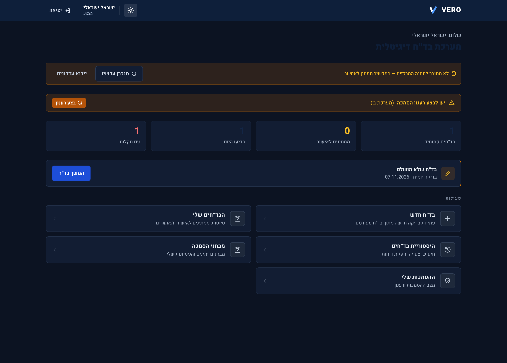
מצב כהה. נוח לעבודה בתנאי תאורה נמוכים; אינו משפיע על מראה הדוחות המופקים.@@ch4@@
4
מדריך מלא למבצעכל שלב בביצוע בד״ח — מהכניסה למערכת ועד סיום הבדיקה והעברתה לאישור
זהו הפרק המרכזי למי שמבצע בדיקות בשטח. נעבור יחד, שלב אחר שלב, על כל מסלול העבודה. לכל שלב מצוין היכן לוחצים, מה ממלאים, מה אמור להופיע, ומה לעשות הלאה.
4.1 כניסה למערכת ובחירת "בד״ח חדש"
התחברות. התחברו עם חשבונכם האישי (פרק 2.3). תגיעו למסך הבית.
פתיחת בדיקה. לחצו על הכרטיסייה בד״ח חדש (אייקון +). תיפתח אשף בחירה.
מה אמור להופיעאם אין לכם הרשאת ביצוע, או שלא הוסמכתם לאף מערכת, יוצג "אין בד״חים פעילים" — פנו למנהל להסמכה.
4.2 בחירת מערכת ודרג (האשף)
האשף מוביל אתכם דרך שובל קצר: סוג מערכת ← מספר מערכת ← דרג בדיקה ← בחירת בד״ח. בכל שלב מוצגים כרטיסים גדולים ללחיצה. אם בשלב מסוים קיימת רק אפשרות אחת — המערכת מדלגת עליו אוטומטית; ואם לדרג שנבחר מתאים בד״ח יחיד, הוא נפתח ישירות.
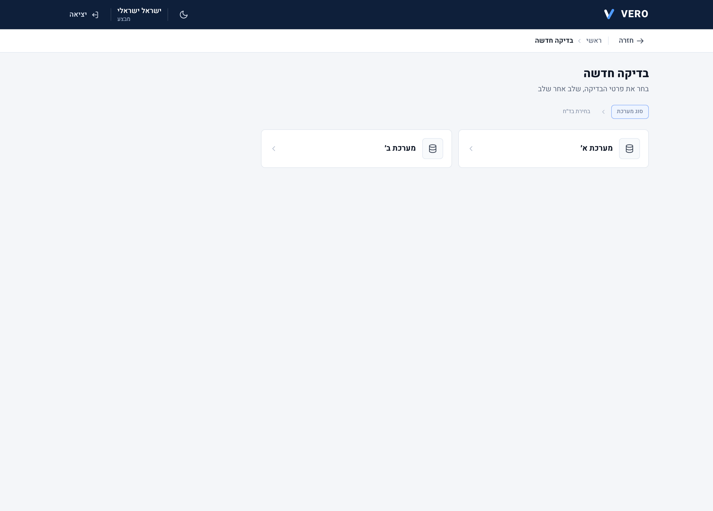
אשף הבד״ח החדש. למעלה — שובל ההתקדמות; למטה — כרטיסי הבחירה לשלב הנוכחי. המערכת מציגה רק מערכות ודרגים שאתם מוסמכים אליהם.
סוג מערכת. לחצו על סוג המערכת הנבדק.
מספר מערכת. בחרו את המופע הספציפי (אם מוגדרים מספרי מערכת).
דרג בדיקה. בחרו את הדרג. הוא מגדיר גם איזה בד״ח ייפתח.
בחירת בד״ח. אם מתאימים כמה בד״חים — בחרו את המתאים; אחרת הוא ייפתח מעצמו.
ניתן ללחוץ על שלב קודם בשובל ההתקדמות כדי לחזור אליו ולשנות בחירה.
4.3 מסך ביצוע הבד״ח — מבט כללי
לאחר הפתיחה נכנסים למסך הביצוע. בראשו מוצגים פרטי הבד״ח הקבועים (סוג מערכת · מספר מערכת · תאריך · דרג) ופס התקדמות שמראה כמה סעיפים סומנו מתוך הכלל. מתחת — פרטי הבד״ח, תוכן הבדיקה, החתימות וכפתור הסיום.
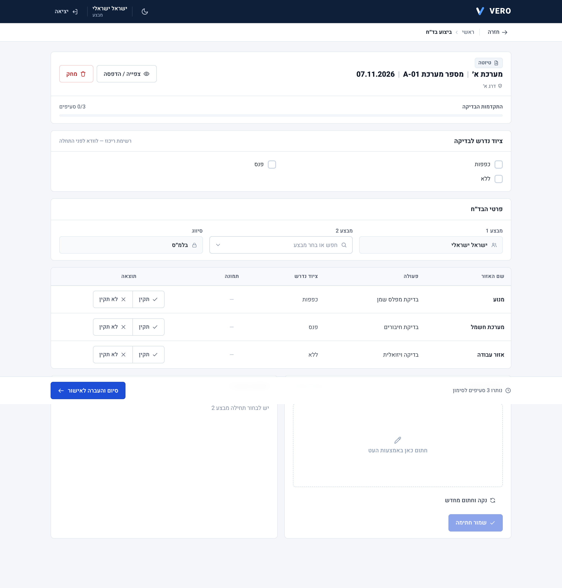
מסך ביצוע הבד״ח. כותרת זהות אוטומטית, פס התקדמות, אזור "ציוד נדרש לבדיקה" (עזר למבצע בלבד), פרטי הבד״ח וטבלת הסעיפים.
4.4 מילוי פרטי הבדיקה ובחירת מבצע 2
רוב הפרטים נקבעים אוטומטית: מבצע 1 הוא המשתמש המחובר, והתאריך הוא תאריך הפתיחה. השדה היחיד שממלאים ידנית בפרטים הוא מבצע 2:
בחירת מבצע 2. בשדה "מבצע 2" בחרו מהרשימה את המבצע השני. הרשימה כוללת רק מבצעים פעילים המוסמכיםלאותה מערכת ודרג, ואינה כוללת את מבצע 1.
חובהכל בדיקה מחייבת שני מבצעים. לא ניתן להעביר לאישור בלי מבצע 2 ובלי שתי חתימות.
4.5 שלב הבד״ח (אם מוגדר)
בבד״חים מסוימים מוגדר שלב הבד״ח — בחירה יחידה (למשל "לפני הכנה" / "אחרי הכנה"). בחרו אפשרות אחת לפני הסיום. זהו סיווג של הבד״ח; הבד״ח עצמו ממולא פעם אחת.
4.6 רשימת הציוד הנדרש
בראש הבד״ח (בזמן ביצוע בלבד) מוצגת רשימת ריכוז של כל הציוד הדרוש לבדיקה. סמנו פריטים כדי לוודא שהצטיידתם בהכול לפני שמתחילים. הרשימה היא עזר למבצע בלבד — היא אינה מופיעה בדוח, ב-PDF או במסך הצפייה.
4.7 ביצוע סעיפי הבדיקה
גוף הבד״ח הוא טבלת הסעיפים. כל שורה כוללת: שם האזור, פעולה (מה לבדוק), ציוד נדרש, תמונה מתארת (אם הוגדרה), ועמודת תוצאה עם שני כפתורים.
סימון סעיף תקין
לחצו על תקין (✓). השורה תסומן בירוק. לחיצה חוזרת מבטלת את הסימון.
סימון סעיף לא תקין + פירוט
סימון. לחצו על לא תקין (✕). השורה תסומן באדום וייפתח חלון פירוט.
כתיבת פירוט. תארו את אי-התקינות בשדה הטקסט ("נמצאה נזילה…"). פירוט ברור חוסך החזרות.
צילום (רשות). ניתן לצרף תמונת תקלה דרך המצלמה/קובץ.
שים לבאם תבטלו סימון "לא תקין" שכבר יש לו פירוט/תמונה — המערכת תבקש אישור, כי הפעולה תמחק את הפירוט.
צפייה בתמונת ייחוס
אם לסעיף הוגדרה תמונה מתארת, לחצו על התמונה הקטנה בעמודת "תמונה" כדי להגדילה — היא ממחישה מה בדיוק לבדוק.
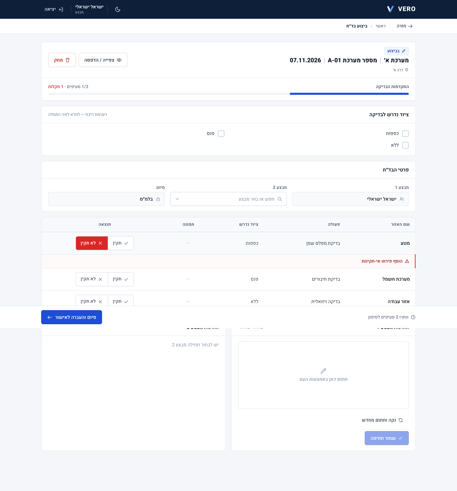
בד״ח במהלך מילוי. סעיפים תקינים בירוק, סעיף לא תקין באדום עם שורת פירוט תקלה. פס ההתקדמות מתעדכן בכל סימון.
4.8 ביצוע מדידות
חלק מהבד״חים כוללים טבלת מדידה — למשל מדידת ערך התחלתי וסופי, חישוב פער מול סבילות מותרת, או מדידת משך זמן מינימלי. המערכת מחשבת את התוצאה אוטומטית ומציגה עבר / לא עבר. פרק 7 מוקדש כולו למדידות.
4.9 שמירת טיוטה וחזרה לבדיקה קיימת
אין צורך בשמירה ידנית — כל שינוי נשמר אוטומטית (שמירה רציפה), ושורד כיבוי והפעלה מחדש. בד״ח שלא הושלם נשמר כטיוטה.
במסך הבית יופיע כרטיס "בד״ח שלא הושלם" עם כפתור המשך בד״ח.
מתוך הבד״חים שלי ניתן לפתוח כל טיוטה ולהמשיכה.
למחיקת טיוטה — כפתור מחק בראש מסך הביצוע (פעולה אינה הפיכה).
4.10 חתימת שני המבצעים
בתחתית הבד״ח שני אזורי חתימה — למבצע 1 ולמבצע 2. החתימה נעשית בציור ישיר על המסך.
חתימה. חתמו במסגרת החתימה בעזרת העט/האצבע.
שמירה. לחצו שמור חתימה. יוצג "נחתם" עם שם החותם, התאריך והשעה.
חתימה מחדש. ניתן ללחוץ חתום מחדש כדי להחליף חתימה קיימת.
אזור חתימת מבצע 2 נפתח רק לאחר שנבחר מבצע 2.
4.11 סיום והעברה לאישור
בדיקת שלמות. ודאו שכל הסעיפים סומנו (הפס מראה "כל הסעיפים סומנו").
סיום. לחצו על הכפתור הקבוע בתחתית סיום והעברה לאישור.
בדיקות אוטומטיות. אם חסר משהו (מבצע 2, חתימה, סעיף לא מסומן, שלב לא נבחר) — תוצג רשימת התיקונים הנדרשים והבד״ח לא יועבר.
זהות המאשרשם המאשר נלקח אוטומטית מהמשתמש המחובר — אין להקליד אותו. לכן חשוב שהמאשר יחתום מחשבונו האישי.
5.4 החזרת בד״ח לתיקון
הכפתור החזר לתיקון מוצג רק כאשר יש בבד״ח לפחות סעיף אחד שסומן "לא תקין". בד״ח תקין לחלוטין ניתן רק לאשר.
פתיחת החלון. לחצו החזר לתיקון.
בחירת סעיפים. סמנו את הסעיפים הלא-תקינים שברצונכם להחזיר.
הערה לכל סעיף. כתבו הערה ברורה לכל סעיף שנבחר (מה יש לתקן). הערה היא חובה לכל סעיף.
החזרה. לחצו החזר לתיקון. הבד״ח חוזר למבצע, והחתימות הקיימות מתבטלות.
שים לבלא ניתן להחזיר בד״ח בלי לבחור סעיף לא-תקין ולכתוב לו הערה. הערה כללית לבדה אינה מחזירה בד״ח.
5.5 העברת סעיפים לדרג מטפל
כאשר תקלה דורשת טיפול של דרג גבוה יותר, ניתן להעביר אליו סעיפים במקום להחזיר למבצע. הכפתור (למשל העבר לדרג ד׳) מוצג כשיש סעיף לא תקין וכשמוגדר דרג גבוה מדרג הבדיקה.
פתיחה. לחצו על העבר לדרג המטפל.
בדיקת כוח אדם. המערכת בודקת שקיימים לפחות שני מבצעים מוסמכים לדרג המטפל; אחרת תוצג התרעה.
בחירת סעיפים + הערות. בחרו את הסעיפים להעברה והוסיפו הערה לכל אחד.
העברה. לחצו העבר לטיפול. הבד״ח עובר לסטטוס "בטיפול", ומבצעי התיקון בדרג המטפל מתעדים את הטיפול וחותמים. הבדיקה והחתימות המקוריות נשמרות.
5.6 הגדרת תקלה במעקב
מאשר יכול להגדיר סעיף לא-תקין כתקלה במעקב. תקלה כזו "נדבקת" למספר המערכת ומוצגת ככרזה בכל בד״ח עתידי של אותה מערכת, עד שתיסגר. שום דבר אינו קורה אוטומטית — ההגדרה היא יזומה.
באזור האישור, תחת "הגדרת תקלה למעקב", אתרו את הסעיף הלא-תקין.
לחצו הגדר כתקלה במעקב. הסעיף יסומן 🟠 במעקב.
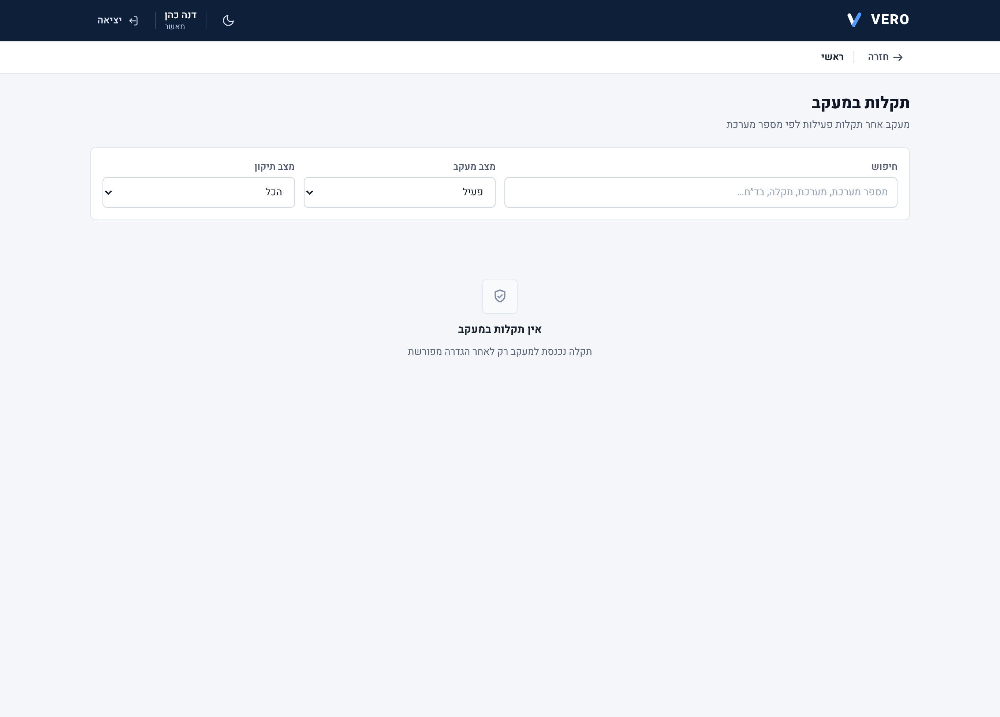
תקלות במעקב. ריכוז התקלות הפתוחות לפי מערכת. מכאן ניתן לנהלן ולסגור אותן.
5.7 דוגמאות לתהליכי אישור
תהליך תקין
פתיחת בד״ח שהוגש←כל הסעיפים תקינים←חתימת מאשר←אישור ונעילה
תהליך עם ליקוי
סעיף לא תקין←החזרה לתיקון + הערה←המבצע מתקן וחותם←בדיקה חוזרת←אישור
@@ch6@@
6
מדריך מלא למנהלניהול מלא של המערכת — משתמשים, היררכיה, בניית בד״חים, הסמכות, מבחנים, גיבוי, הגדרות ויומן ביקורת
פרק זה הוא הנרחב ביותר. המנהל מגדיר הכול — מי המשתמשים, אילו מערכות ודרגים קיימים, כיצד נראה כל בד״ח, מי מוסמך לְמה, וכן גיבוי, הגדרות ובקרה. לכל פעולה מצוינים ההוראות, התוצאה הצפויה ואזהרות.
6.1 לוח הניהול (Dashboard)
הכניסה לניהול דרך הכרטיסייה לוח ניהול. לוח הבקרה מציג תמונת מצב: מוני בד״חים, נפח לפי חודש, יחס תקין/לא תקין, פילוח לפי מערכת/מספר/דרג/מבצע, ותור האישור.
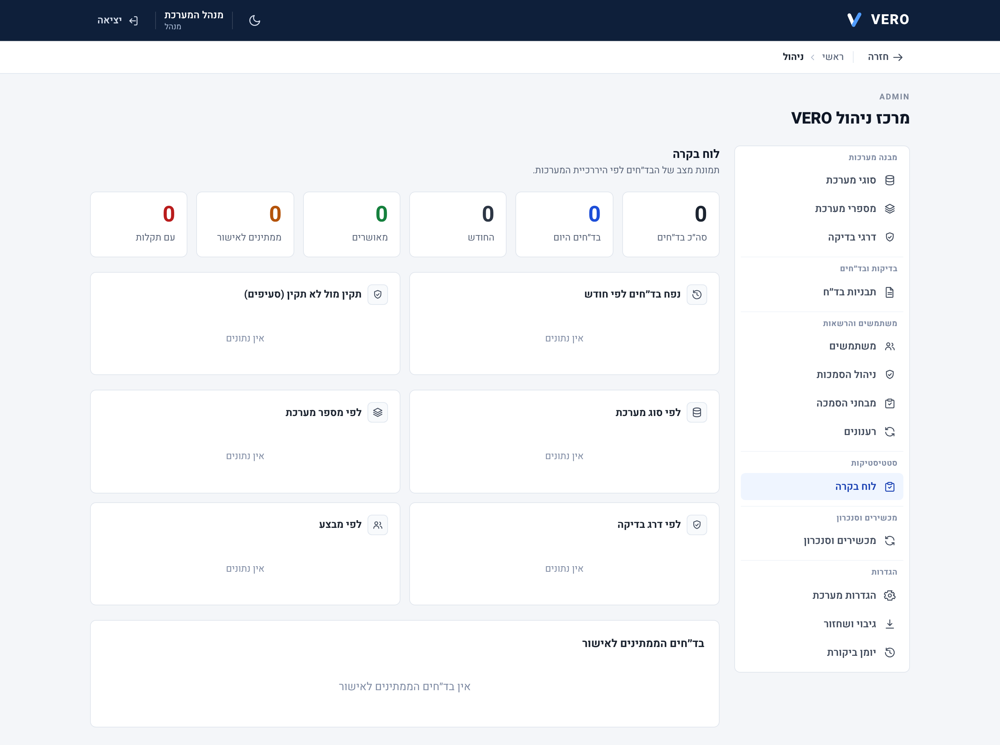
לוח הבקרה. מדדים עליונים, גרף נפח חודשי, יחס תקין/לא תקין, ופילוחים לפי היררכיית המערכות.
6.2 ניהול משתמשים והרשאות
מסך ניהול משתמשים מציג את כל המשתמשים, הרשאותיהם וסטטוסם.
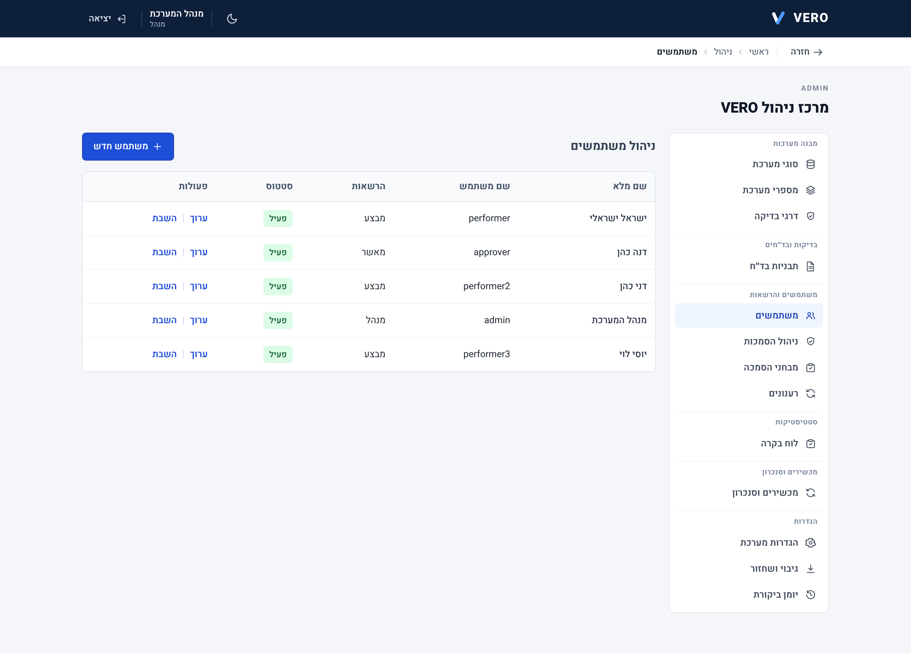
ניהול משתמשים. טבלת משתמשים עם שם, שם משתמש, הרשאות, סטטוס ופעולות (ערוך / השבת).
יצירת/עריכת משתמש
משתמש חדש. לחצו משתמש חדש (או ערוך על קיים).
פרטים. מלאו שם מלא, שם משתמש וסיסמה (4 תווים לפחות).
הרשאות. סמנו הרשאות (מבצע / מאשר / מנהל). ניתן לשלב.
שמירה. לחצו שמור. הפעולה נרשמת ביומן הביקורת.
איפוס סיסמה: בעריכת משתמש, הזינו סיסמה חדשה (השארה ריקה = ללא שינוי).
השבתה/הפעלה: משתמש מושבת אינו יכול להתחבר ואינו מופיע כבחירת מבצע 2.
שיוך הסמכות למשתמש
בתוך עריכת משתמש מופיע אזור הסמכות — שיוך למערכות ודרגים. לכל מערכת בוחרים דרג הסמכה מרבי אחד; מאחר שהדרגים היררכיים, בחירה זו כוללת אוטומטית את כל הדרגים שתחתיו. "ללא הסמכה" מסירה את ההסמכה למערכת.
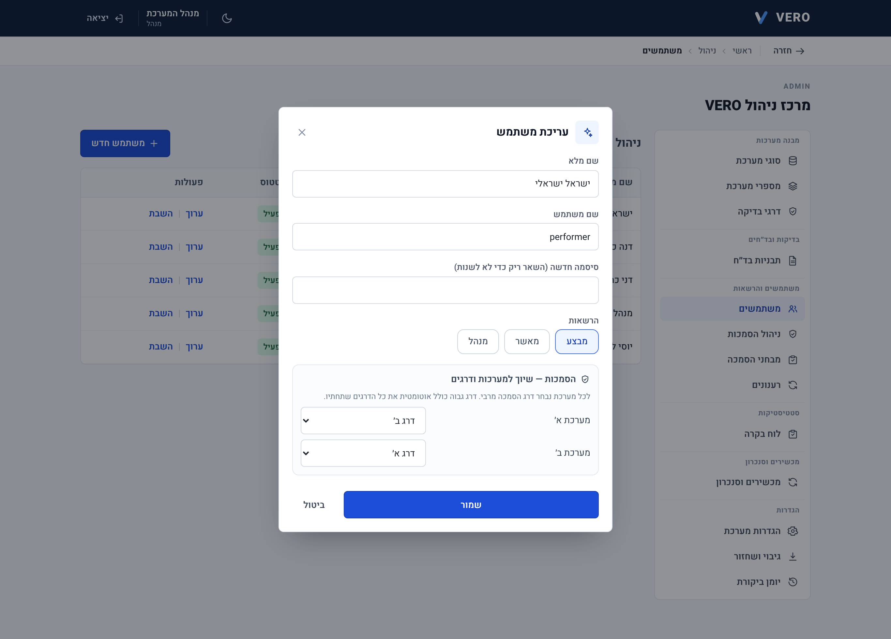
עריכת משתמש. פרטים, הרשאות, ולמטה — עורך ההסמכות לכל מערכת (דרג הסמכה מרבי).
אבטחההשיטה מונעת שילוב לא חוקי (למשל דרג ד׳ בלי ב׳). כל שינוי הסמכה נשמר מיד ונרשם ביומן עם מבצע, תאריך ושעה.
6.3 ניהול ההיררכיה: מערכות, מספרי מערכת ודרגים
סוגי מערכת
מסך סוגי מערכת — הרמה העליונה. ניתן להוסיף סוג מערכת, לשנות שם, לשנות סדר (חצים), ולהשבית (מערכת מושבתת לא תוצג בבדיקה חדשה).
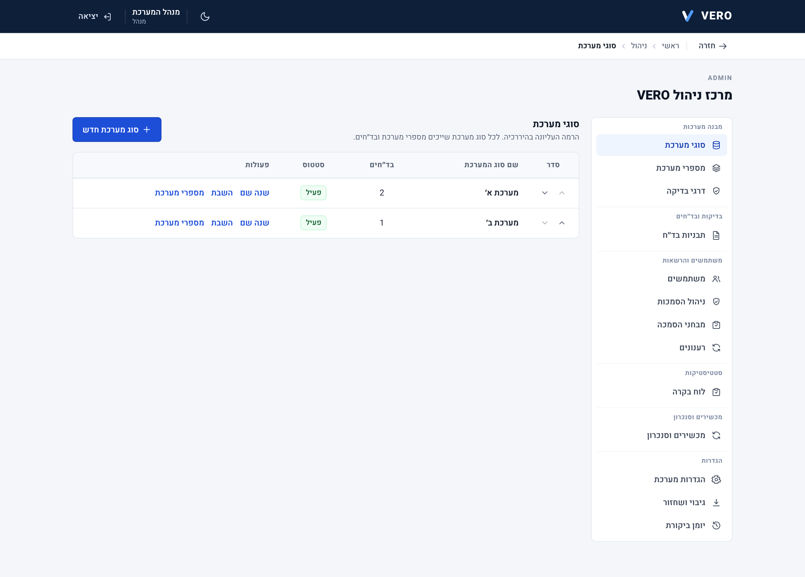
סוגי מערכת. סדר, שם, מספר בד״חים משויכים, סטטוס ופעולות.
סוג מערכת חדש. לחצו סוג מערכת חדש, הזינו שם ושמרו.
מספרי מערכת. לחצו על מספרי מערכת כדי לנהל את המופעים (יחידות) של אותו סוג.
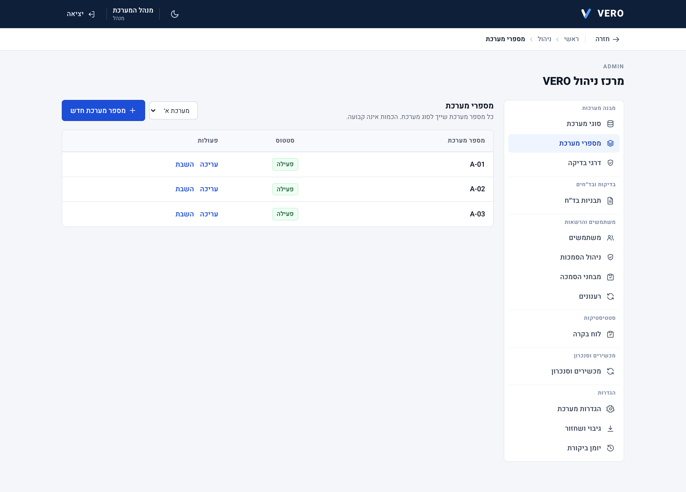
מספרי מערכת. המופעים הספציפיים (יחידות) בתוך כל סוג מערכת.
דרגים
מסך דרגים מגדיר את דרגי הבדיקה וסדרם ההיררכי. הסדר קובע מהו "גבוה יותר" לצורך העברה לדרג מטפל והסמכות.
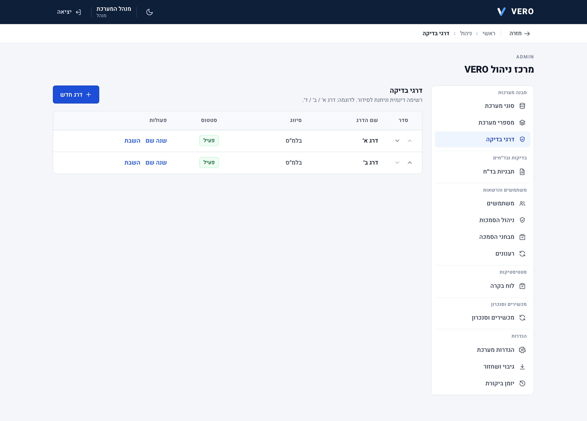
דרגים. רשימת הדרגים לפי סדר היררכי.
6.4 בניית בד״ח (תבנית) — ניהול בד״חים
לב ההגדרה. מסך ניהול בד״חים מציג את כל התבניות. לחיצה על תבנית פותחת את עורך הבד״ח.
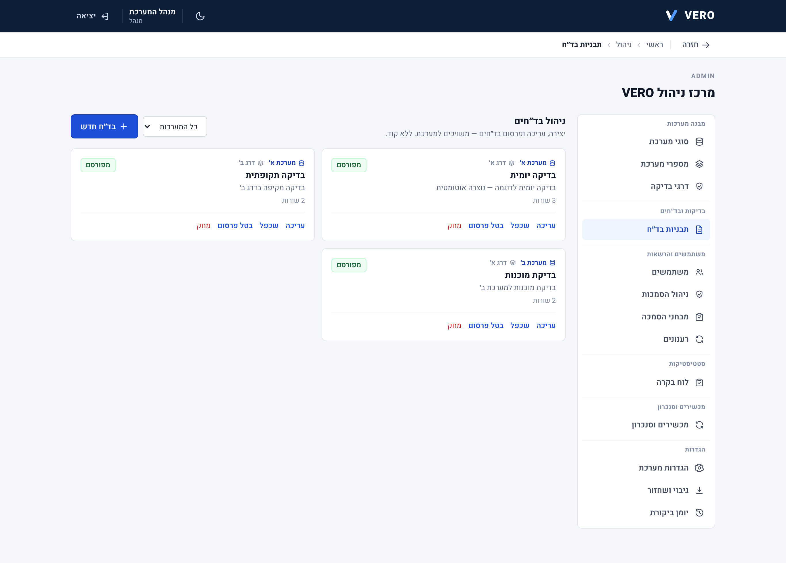
ניהול בד״חים. רשימת התבניות לפי מערכת ודרג, עם סטטוס פרסום.
עורך הבד״ח
העורך בנוי משלושה אזורים: פרטי הבד״ח (מערכת, דרג, שם, תיאור), שלב הבד״ח (אופציונלי), ורכיבי הבד״ח — רשימת המרכיבים בסדר שייראה למבצע.
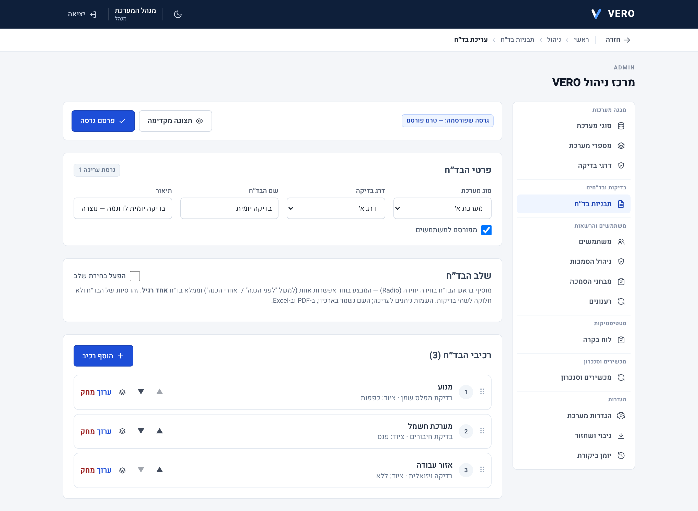
עורך הבד״ח. סרגל פרסום (גרסה, שינויים שלא פורסמו), פרטי הבד״ח, ורשימת הרכיבים הניתנת לגרירה ולסידור.
הוספת רכיבים
לחצו הוסף רכיב ובחרו סוג. כל רכיב נערך בחלון ייעודי:
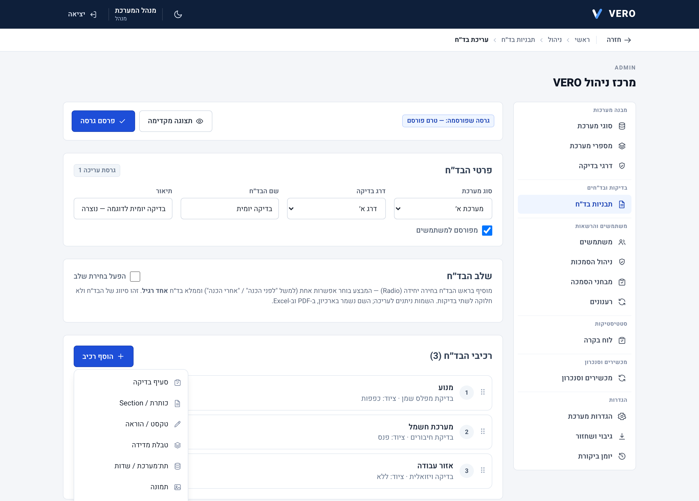
תפריט הרכיבים. מגוון סוגי הרכיבים שניתן להוסיף לבד״ח.
רכיב
תיאור ושימוש
סעיף בדיקה
שורת בדיקה: שם אזור, פעולה, ציוד נדרש (רשימה) ותמונה מתארת. זהו הרכיב הנפוץ ביותר.
כותרת / Section
כותרת מפרידה לקיבוץ סעיפים (למשל "בדיקות מקדימות"). ניתן להגדירה כניתנת לקיפול.
טקסט / הוראה
הוראה חופשית למבצע (למשל "בצע את המדידה לאחר 4 שעות עבודה").
טבלת מדידה
טבלה למדידות עם חוקי פער (±X) ו/או משך זמן מינימלי. ראה פרק 7.
טבלת תתי־מערכת (מדידה)
רשת שבה כל שורה היא תת־מערכת, עם חישוב פער/משך אוטומטי ותוצאה לכל שורה. ראה פרק 7.
תת־מערכת / שדות
קבוצת שדות מותאמים (מספר סידורי, דגם, מק״ט…) — המנהל מגדיר שם, סוג (טקסט/מספר/תאריך/רשימה) וחובה.
תמונה
תמונת ייחוס. ניתן לקבוע הצגה בזמן ביצוע ו/או ב-PDF.
ציוד נדרש
רשימת ציוד לכלל הבד״ח.
מפריד
קו הפרדה ויזואלי.
עריכת סעיף בדיקה
שם האזור ופעולה. מלאו את שם האזור הנבדק ואת הפעולה הנדרשת (שניהם חובה).
ציוד נדרש. הוסיפו פריטי ציוד (שורה לכל פריט), וסדרו אותם.
תמונה מתארת. ניתן לצרף תמונה שתעזור למבצע לזהות מה לבדוק.
שלב הבד״ח
סמנו הפעל בחירת שלב כדי להוסיף בראש הבד״ח בחירה יחידה (למשל "לפני הכנה" / "אחרי הכנה"). הוסיפו שלבים, שנו שמות וסדר. השם נשמר בארכיון, ב-PDF וב-Excel.
סידור, שכפול ומחיקה
סידור: גררו רכיבים או השתמשו בחצים לשינוי הסדר.
שכפול: כפתור שכפול יוצר עותק של רכיב.
מחיקה: מסירה רכיב (דרושה הסכמה).
תצוגה מקדימה ופרסום גרסה
המערכת מנהלת גרסאות. שינויים שמורים כטיוטה עד שמפרסמים.
תצוגה מקדימה. לחצו תצוגה מקדימה לראות את הבד״ח כפי שהמבצע יראה (אינו יוצר בד״ח אמיתי).
פרסום. לחצו פרסם גרסה. המערכת בודקת תקינות; בחרו עדכון משני/ראשי והוסיפו תקציר שינויים.
זמינות. רק גרסה שפורסמה זמינה למבצעים. בד״חים שכבר נפתחו שומרים את גרסתם (Snapshot).
טיוטה מול פרסוםתבנית שמעולם לא פורסמה מסומנת "טיוטה — אינו זמין למבצעים". "יש שינויים שלא פורסמו" מציין שהעריכה טרם שוקפה למבצעים.
6.5 הסמכות ותוקף
ניהול מרוכז של כל ההסמכות במסך ניהול הסמכות (מפורט בפרק 8). כולל מוני מצב (בתוקף / דורשות רענון / פגות תוקף), סינון, עריכה, קביעת תוקף ברירת מחדל (חודשים) וחידוש.
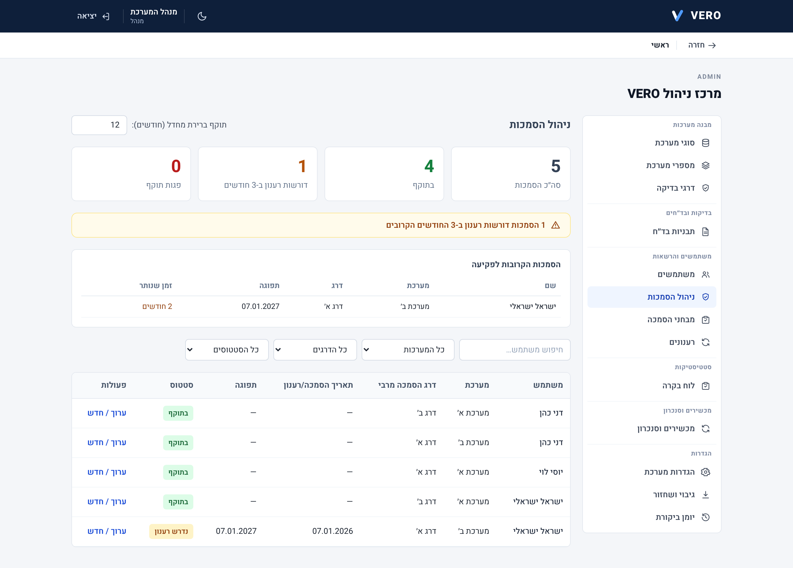
ניהול הסמכות. לוח מוני מצב, הסמכות קרובות לפקיעה, וטבלת כל ההסמכות עם סינון ועריכה.
6.6 מבחנים ורענונים
מסך מבחני הסמכה מאפשר ליצור ולערוך מבחנים (שאלות, תשובות, ציון מעבר) שישמשו לרענון הסמכה. כאשר הסמכה מתקרבת לפקיעה, המשתמש מבצע את מבחן הרענון, והמאשר המורשה מאשר — מה שמאריך את תוקף ההסמכה.
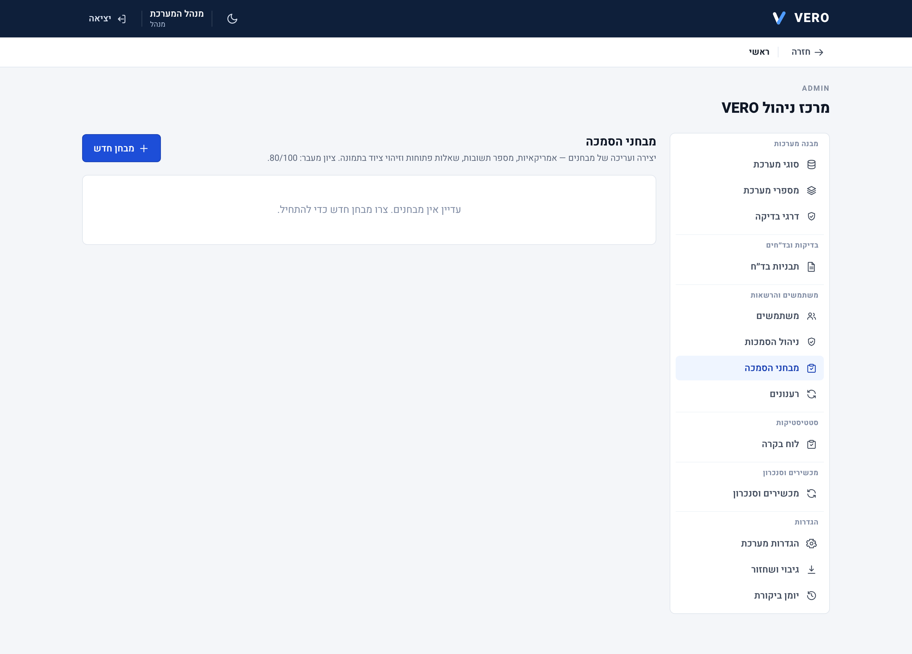
מבחני הסמכה. יצירה, עריכה ופרסום מבחנים עבור רענוני הסמכה.
6.7 גיבוי ושחזור
מסך גיבוי כולל שלוש פעולות (מפורט בפרק 9):
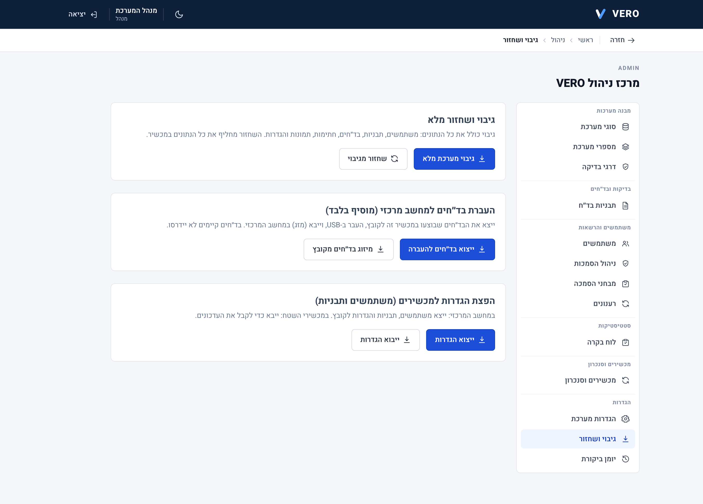
גיבוי ושחזור. גיבוי מלא, העברת בד״חים למחשב מרכזי (מוסיף בלבד), והפצת הגדרות למכשירים.
גיבוי מערכת מלא — קובץ הכולל את כל הנתונים (משתמשים, תבניות, בד״חים, חתימות, תמונות, הסמכות, מבחנים, תקלות במעקב). השחזור מחליף את כל הנתונים במכשיר.
העברת בד״חים (מוסיף בלבד) — ייצוא בד״חים ומיזוגם במחשב המרכזי בלי לדרוס קיימים.
אזהרהשחזור מגיבוי מלא הוא הרסני — הוא מוחק ומחליף את כל הנתונים במכשיר. בצעו רק לאחר ודאות, והמערכת תבקש אישור.
6.8 מכשירים וסנכרון
מסך מכשירים מגדיר את תפקיד המכשיר (טאבלט / תחנה מרכזית) ומנהל סנכרון חבילות (פרק 9).
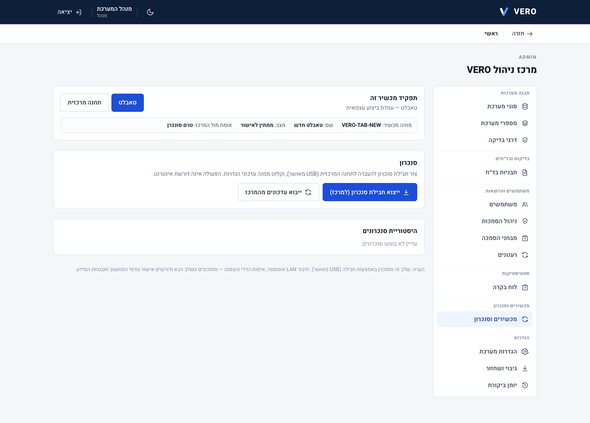
מכשירים וסנכרון. תפקיד המכשיר, פעולות סנכרון, מרשם מכשירים (בתחנה מרכזית) והיסטוריית סנכרונים.
6.9 הגדרות
מסך הגדרות:
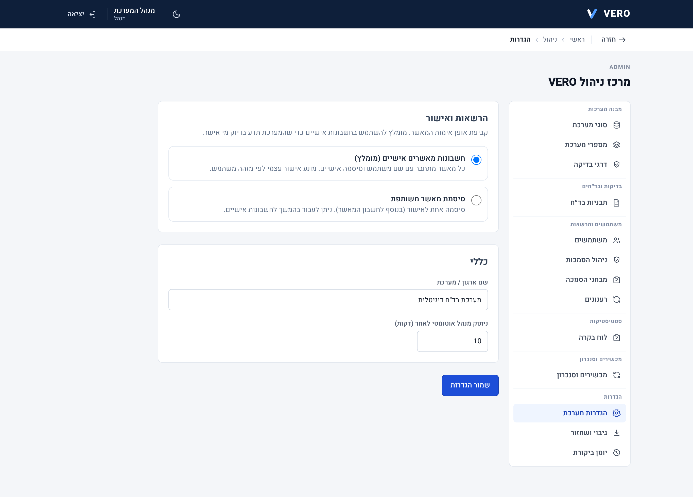
הגדרות. אופן אימות המאשר, שם ארגון, וניתוק מנהל אוטומטי.
אופן אישור: חשבונות מאשרים אישיים (מומלץ) או סיסמת מאשר משותפת.
שם ארגון / מערכת וניתוק מנהל אוטומטי (דקות).
6.10 יומן ביקורת
מסך יומן ביקורת מתעד פעולות מערכתיות (יצירת/עדכון משתמשים, שינויי הסמכה ומערכות ועוד) עם מבצע הפעולה, התאריך והשעה. היומן בלתי-משתנה.
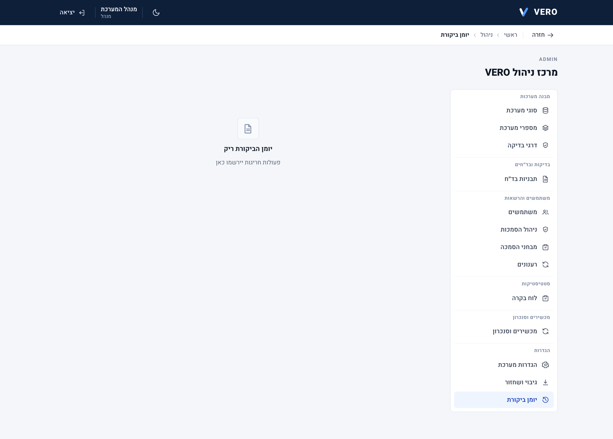
יומן ביקורת. תיעוד בלתי-משתנה של הפעולות המערכתיות.@@ch7@@
7
בדיקות מדידהטבלאות מדידה, חישוב פער מול סבילות, משך בדיקה מינימלי, וטבלת תתי־מערכת
מעבר לסימון תקין/לא תקין, VERO יודעת לבצע מדידות מספריות ולחשב תוצאה אוטומטית. התוצאה תמיד נגזרת מהנתונים — אי אפשר לקבוע אותה ידנית — כך שהיא אמינה ועקבית.
7.1 יצירת טבלת מדידות (למנהל)
בעורך הבד״ח, דרך הוסף רכיב ← טבלת מדידה. המנהל מגדיר עמודות (ערכים), שורות (נקודות מדידה), וחוקי הערכה. אין צורך בקוד — הכול דרך הממשק, ונשמר ב-Database.
7.2 ערך התחלתי וסופי וחישוב פער (חוק ±X)
חוק המדידה הנפוץ הוא חוק הפער: בודקים את ההפרש בין ערך סופי לערך התחלתי מול פער מותר.
פער = ערך סופי − ערך התחלתי (עם סימן).
המדידה עברה כאשר הערך המוחלט של הפער קטן או שווה לפער המותר: |פער| ≤ מותר. ערך על הגבול נחשב תקין.
דוגמאות מספריות
ערך התחלתי
ערך סופי
פער מותר
פער בפועל
תוצאה
100
103
±5
+3
עבר
100
95
±5
−5
עבר (על הגבול)
100
107
±5
+7
לא עבר
100
—
±5
—
טרם הושלם
7.3 משך בדיקה מינימלי
חוק נוסף הוא משך מינימלי: בדיקה שחייבת להימשך לפחות פרק זמן מסוים (למשל 180 דקות). המערכת מודדת את הזמן בפועל (התחלה→סיום) ומשווה למינימום:
המינימום הוא רצפה, לא תקרה: בפועל ≥ מינימום → עבר; בפועל < מינימום → לא עבר.
זמן סיום מוקדם מזמן התחלה מסומן כלא תקין (בלתי-אפשרי כרונולוגית).
משך נדרש (מינ')
משך בפועל
תוצאה
180 דקות
3 שעות ו-15 דקות
עבר
180 דקות
2 שעות ו-40 דקות
לא עבר
180 דקות
טרם הסתיים
טרם הושלם
7.4 משמעות "עבר / לא עבר"
טבלת מדידה מסכמת את כל חוקיה לתוצאה אחת: עבר רק כאשר כל החוקים עברו; לא עבר אם ולו חוק אחד נכשל; טרם הושלם כל עוד חסר ערך נדרש. כשהמדידה "לא עברה", המערכת מציגה את הסיבה המדויקת (למשל "הפער בפועל 7 חורג מהמותר ±5").
7.5 טבלת תתי־מערכת (מדידה)
רכיב מתקדם שבו כל שורה היא תת־מערכת (למשל משאבה A, משאבה B), ואותם חוקי עמודות מוחלים על כל שורה בנפרד. עמודות חישוב (פער/משך) מחושבות אוטומטית, ולכל שורה מתקבלת תוצאה עבר/לא עבר משלה. המנהל בונה ומעצב את הטבלה בעורך ויזואלי (שורות/עמודות/אייקונים/ספים/עיצוב) — והכול נשמר ב-Database ונלכד ב-Snapshot של הבד״ח.
הערת תיעודבעותק ההדגמה של המערכת לא הוגדרה טבלת מדידה לדוגמה, ולכן אין כאן צילום מסך חי של מילוי טבלה. המנגנון פעיל וזמין בעורך הבד״ח (רכיב "טבלת מדידה" / "טבלת תתי־מערכת"). לקבלת צילומים עם נתונים אמיתיים — ניתן להוסיף טבלת מדידה לבד״ח הדגמה ולצלם במכשיר.
7.6 תקלות מדידה נפוצות
מצב
סיבה / פתרון
התוצאה נשארת "טרם הושלם"
חסר ערך נדרש (התחלתי/סופי) או שלא נמדד משך. השלימו את כל השדות.
"זמן הסיום מוקדם מזמן ההתחלה"
בדקו את שעות ההתחלה/סיום — ייתכן שהוזנו הפוך.
מספר אינו מתקבל
הזינו ספרות בלבד (נקודה עשרונית מותרת). טקסט אינו נחשב כמספר.
@@ch8@@
8
הרשאות והסמכותסוגי ההרשאות, הסמכות לפי מערכת ודרג, תוקף, חידוש והתראות פקיעה
8.1 סוגי הרשאות
כפי שתואר בפרק 1.5, קיימות שלוש הרשאות: מבצע, מאשר ומנהל. ההרשאה קובעת אילו מסכים ופעולות זמינים. הסמכה, לעומת זאת, קובעת באילו מערכות ודרגים מותר למבצע לבצע בדיקות.
הרשאה מול הסמכההרשאה = מה מותר לך לעשות במערכת (לבצע/לאשר/לנהל). הסמכה = היכן מותר לך לבצע (מערכת + דרג), עם תוקף בזמן.
8.2 הסמכות לפי מערכת ודרג
לכל מערכת בוחרים למשתמש דרג הסמכה מרבי אחד. הדרגים היררכיים — דרג גבוה כולל אוטומטית את כל שתחתיו. כך מובטח שאי אפשר להגדיר שילוב לא חוקי. ההסמכה נדרשת גם למבצע 1, גם למבצע 2, וגם למבצעי תיקון בדרג מטפל.
8.3 תוקף הסמכה
לכל הסמכה תאריך הנפקה/רענון ותוקף בחודשים (ברירת מחדל נקבעת בהגדרות ההסמכות). ממנו מחושב תאריך התפוגה. סטטוסי ההסמכה:
סטטוס
משמעות
בתוקף
ההסמכה תקפה.
נדרש רענון
מתקרבת לפקיעה (בטווח 3 חודשים) — יש לרענן.
פג תוקף
פקעה — יש לרענן לפני ביצוע נוסף.
8.4 חידוש הסמכה והתראות
המערכת מתריעה מראש:
במסך הבית מופיעה כרזה "יש לבצע רענון הסמכה" עם כפתור בצע רענון.
בכניסה מוצג חלון רענון חד-פעמי לסשן.
מנהל רואה במסך הבית כמה הסמכות דורשות טיפול, ובמסך ההסמכות — פירוט מלא.
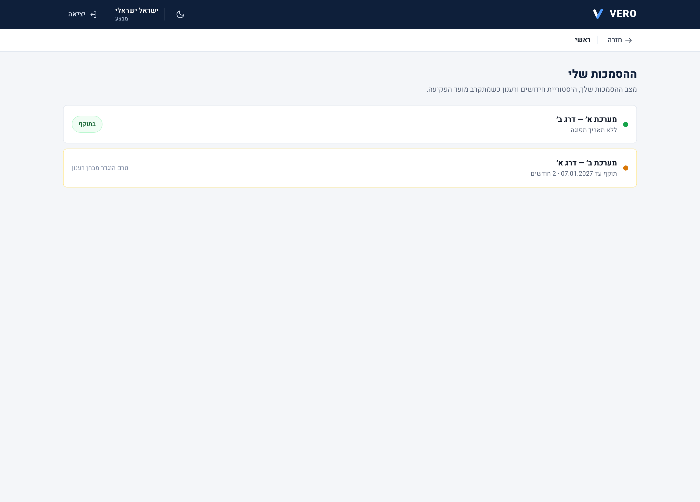
ההסמכות שלי. מצב כל הסמכה, זמן שנותר, היסטוריית חידושים, וכפתור "בצע רענון" כשנדרש.
מבחן. עונים על שאלות המבחן. נדרש לעבור את ציון המעבר.
אישור. לאחר הצלחה, הרענון ממתין לאישור מאשר מורשה; באישור — תוקף ההסמכה מתארך.
כל אירוע (הנפקה, רענון, אישור, דחייה) נשמר בהיסטוריית הרענונים הבלתי-משתנה, עם ציון, מאשר ותאריך.
8.6 פעולות שאינן מותרות למשתמש לא מוסמך
פתיחת בד״ח במערכת/דרג שאינו מוסמך אליהם — המערכת לא תציג אפשרות זו.
בחירה כמבצע 2 בבדיקה שאינו מוסמך אליה.
קבלת סעיף לטיפול בדרג מטפל שאינו מוסמך אליו.
@@ch9@@
9
עבודה ללא אינטרנט וסנכרוןשמירה מקומית, שרידות נתונים, והעברת בד״חים בין מכשירים — בקובץ, ללא רשת
VERO תוכננה מהיסוד לעבודה מלאה ללא אינטרנט. כל הנתונים חיים במכשיר. פרק זה מסביר כיצד נשמרים הנתונים וכיצד מעבירים אותם בין מכשירים בבטחה.
9.1 עבודה במצב אופליין
אין שום פעולה במערכת הדורשת רשת: התחברות, מילוי בד״ח, חתימה, אישור, הפקת PDF ו-Excel — הכול מקומי. אין שרת, אין ענן, אין עדכונים אוטומטיים מהרשת. זה גם יתרון אבטחה (ראה גם פרק 9.6).
9.2 שמירת נתונים מקומית ושרידות
כל הנתונים נשמרים במסד נתונים מקומי בתוך המכשיר (IndexedDB).
שמירה אוטומטית רציפה בזמן מילוי בד״ח — אין צורך ללחוץ "שמור".
הנתונים שורדים כיבוי והדלקה של המכשיר/התוכנה.
נתוני VERO מופרדים מקבצי התוכנה ואינם נמחקים בעדכון גרסה.
טיפאם סגרתם בטעות — פשוט פתחו שוב. הטיוטה תמתין לכם במסך הבית ("בד״ח שלא הושלם").
9.3 חזרה לטיוטות וסגירת התוכנה
בד״ח שלא הושלם נשמר כטיוטה וזמין במסך הבית וב"הבד״חים שלי". אפשר לסגור את התוכנה בכל שלב ולהמשיך מאוחר יותר — ללא איבוד מידע.
9.4 העברת נתונים למחשב מרכזי
העברת בד״חים מהטאבלט לתחנה מרכזית מתבצעת בקובץ (USB מאושר / רשת מקומית), ללא אינטרנט. המנגנון מוסיף בלבד — בד״חים קיימים אינם נדרסים.
בטאבלט. בניהול ← גיבוי (או מכשירים), לחצו ייצוא בד״חים להעברה / ייצוא חבילת סנכרון. נוצר קובץ.
העברה. העבירו את הקובץ לתחנה המרכזית ב-USB מאושר.
בתחנה המרכזית. לחצו מיזוג בד״חים מקובץ / ייבוא חבילת סנכרון. יוצג סיכום "נוספו X בד״חים (Y כבר קיימים)".
9.5 הפצת הגדרות למכשירים
בכיוון ההפוך — מהתחנה המרכזית למכשירי השטח — מפיצים משתמשים, תבניות בד״ח והגדרות:
במסך מכשירים מגדירים אם המכשיר הוא טאבלט (עמדת ביצוע) או תחנה מרכזית (מקבלת בד״חים ומנהלת הגדרות). התחנה המרכזית מנהלת מרשם מכשירים (אישור/השבתה) והיסטוריית סנכרונים. הסנכרון בטוח לייבוא חוזר — ייבוא של אותה חבילה פעמיים לא יוצר כפילויות.
9.7 טיפול בתקלות סנכרון
מצב
פתרון
"הסנכרון לא הושלם" בייבוא
ודאו שהקובץ תקין ולא נפגם בהעברה; נסו לייצא ולהעביר שוב.
בד״חים לא הופיעו בתחנה
ודאו שייבאתם את הקובץ הנכון; בדקו בהיסטוריית הסנכרונים שהקליטה נרשמה.
מכשיר "ממתין לאישור" בתחנה
אשרו אותו במרשם המכשירים כדי לאפשר לו לקבל עדכונים.
יכולת מתוכננת (אינה פעילה)חיבור רשת מקומית (LAN) אוטומטי, אימות הדדי בין מכשירים והצפנת תעבורה — מתוכננים כשלב הבא, ודורשים אישור גורמי המחשוב ואבטחת המידע. כיום הסנכרון מתבצע בחבילת קובץ בלבד.
מכל בד״ח (מתוך מסך הביצוע או ההיסטוריה) ניתן להיכנס לצפייה / הדפסה. המסך מציג את המסמך הרשמי ובראשו שלושה כפתורים: Excel, PDF והדפס.
המסמך הרשמי. כותרת עם לוגו ומספר בד״ח, סטטוס, פרטי הזהות, טבלת הסעיפים, ריכוז תוצאות, פירוט אי-תקינות ואזורי חתימה.
10.2 מבנה הדוח
כותרת
לוגו VERO, "דוח בדיקה", תאריך ומספר בד״ח.
סטטוס
מצב הבד״ח (בביצוע / ממתין / מאושר). בד״ח מאושר מוצג כמסמך סופי.
פרטי זהות
סוג מערכת, מספר מערכת, מספר בד״ח, דרג, תאריך, סיווג (בלמ״ס), מבצעים ומאשר.
טבלת סעיפים
שם האזור, פעולה, ציוד, ועמודות תקין/לא תקין.
ריכוז
סה״כ בדיקות, כמה תקין וכמה לא תקין.
פירוט אי-תקינות
לכל סעיף לא תקין — התקלה, הטיפול (אם בוצע) והאימות.
חתימות
מבצע 1, מבצע 2 ומאשר — עם תאריך ושעה.
כותרת תחתונה
מספר בד״ח, תאריך ושעת ההפקה, וסיווג — בכל עמוד.
מספר הבד״ח, תאריך ושעה, היסטוריית התיקונים ורמת הסיווג — כולם מופיעים במסמך באופן אוטומטי.
10.3 הפקת PDF והדפסה
PDF. לחצו PDF — נוצר קובץ PDF של המסמך (A4, כותרת תחתונה חוזרת בכל עמוד).
הדפסה. לחצו הדפס לשליחה למדפסת.
מסמך תמיד בהירגם כאשר הממשק במצב כהה, ה-PDF וההדפסה נשארים בהירים תמיד — כדי שמסמכים מודפסים ייראו אחידים וברורים.
10.4 ייצוא ל-Excel (בד״ח יחיד)
לחצו Excel במסך הצפייה (או "Excel" בשורת הבד״ח בהיסטוריה) ליצירת קובץ Excel של אותו בד״ח — נוח לניתוח ולארכוב.
10.5 ייצוא לאקסל מרוכז
במסך היסטוריית בד״חים, מנהל/מאשר יכול להפיק Excel מרוכז של כל הבד״חים המסוננים כעת. מתקבלת חוברת אחת: גיליון סיכום, וגיליון נפרד לכל צירוף מערכת × דרג — מטריצה חכמה של כל הבד״חים מול הסעיפים, השדות והתוצאות.
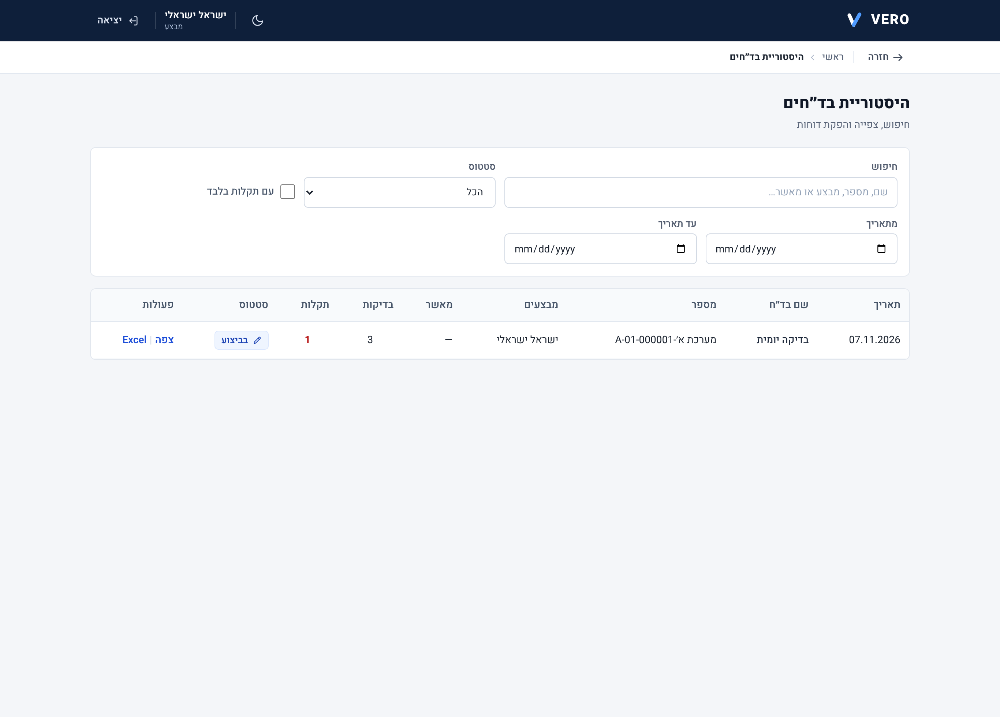
היסטוריית בד״חים. חיפוש וסינון (סטטוס, שלב, תאריכים, "עם תקלות"), כפתור "ייצוא לאקסל מרוכז", וטבלת הבד״חים עם צפייה ו-Excel לכל שורה.
סינון. הגדירו את הסינון הרצוי (למשל כל הבד״חים המאושרים של מערכת מסוימת).
פתרון תקלותתיאור התקלה, סיבות אפשריות, פתרון צעד-אחר-צעד, ומתי לפנות למנהל
תקלה
סיבות אפשריות
פתרון
לא ניתן להתחבר
סיסמה שגויה / משתמש מושבת / שפת מקלדת.
בדקו הקלדה; אם מושבת — פנו למנהל להפעלה/איפוס סיסמה.
"אין בד״חים פעילים" בבד״ח חדש
אין הסמכה למערכת, או שאין בד״ח מפורסם.
פנו למנהל להסמכה ולפרסום בד״ח מתאים.
לא ניתן לבחור מבצע 2
אינו מוסמך / מושבת / הוא מבצע 1.
המנהל יסמיך מבצע מתאים למערכת ולדרג.
"הבד״ח אינו שלם" בסיום
סעיף לא מסומן / חסר מבצע 2 / חסרה חתימה / לא נבחר שלב.
עברו על רשימת התיקונים המוצגת והשלימו.
לא ניתן לאשר בד״ח
אתם המבצע של הבד״ח (מניעת אישור עצמי), או אין הרשאת מאשר.
מאשר אחר יאשר; ודאו התחברות בחשבון מאשר.
תוצאת מדידה "טרם הושלם"
חסר ערך/משך.
השלימו את כל שדות המדידה.
מסך לבן / התוכנה לא נטענת
תקלת הפעלה זמנית.
סגרו והפעילו מחדש את VERO.exe. אם נמשך — פנו ל-IT.
"אין מספיק מקום" בהפקה/שמירה
אחסון מלא במכשיר.
פנו ל-IT לפינוי מקום; אל תמחקו קבצי VERO.
סנכרון נכשל
קובץ פגום / קובץ שגוי.
ייצאו והעבירו שוב; בדקו בהיסטוריית הסנכרונים.
הסמכה פגה
לא בוצע רענון בזמן.
בצעו מבחן רענון ב"ההסמכות שלי"; מנהל יכול לחדש ידנית.
מתי לפנות למנהל המערכתפנו למנהל לכל נושא של הרשאות, הסמכות, יצירת/עריכת בד״חים, שחזור נתונים, או תקלה שחוזרת לאחר הפעלה מחדש. לתקלות התקנה/חומרה/מדפסת — פנו לגורם המחשוב (IT).
@@ch13@@
13
שאלות ותשובותשאלות נפוצות למבצעים, מאשרים ומנהלים
למבצעים
שכחתי לשמור — איבדתי את הבד״ח?
לא. המערכת שומרת אוטומטית כל הזמן. פתחו מחדש והמשיכו מהטיוטה.
חובה שני מבצעים?
כן. כל בדיקה מחייבת שני מבצעים מוסמכים ושתי חתימות.
סימנתי "לא תקין" בטעות, מה עכשיו?
לחצו שוב על "לא תקין" לביטול. אם כבר כתבתם פירוט — תתבקשו לאשר את מחיקתו.
אפשר לעבוד בלי אינטרנט?
כן, תמיד. המערכת כולה עובדת מקומית ללא רשת.
אפשר לצרף תמונה לתקלה?
כן — דרך חלון פירוט התקלה (מצלמה/קובץ).
למאשרים
אפשר לאשר בד״ח שאני ביצעתי?
לא. המערכת מונעת אישור עצמי. מאשר אחר יאשר.
מתי אפשר להחזיר לתיקון?
רק כשיש סעיף "לא תקין", ועם הערה לכל סעיף שמוחזר.
מה ההבדל בין החזרה לתיקון להעברה לדרג מטפל?
החזרה מחזירה את הבד״ח למבצע המקורי; העברה לדרג מטפל מנתבת סעיפים לטיפול של דרג גבוה יותר, תוך שמירת הבדיקה המקורית.
מה קורה לחתימות אחרי החזרה?
הן מתבטלות, ונדרשות חתימות מחדש לאחר התיקון.
למנהלים
שיניתי תבנית — זה משפיע על בד״חים קיימים?
לא. בד״ח שומר את גרסת התבנית שהייתה בעת פתיחתו (Snapshot). השינוי חל רק על בד״חים חדשים לאחר פרסום.
איך נותנים למשתמש להתחיל לעבוד?
צרו לו משתמש עם הרשאת מבצע, והגדירו לו הסמכה (דרג הסמכה מרבי) לכל מערכת רלוונטית.
איך מגבים את המערכת?
ניהול ← גיבוי ← "גיבוי מערכת מלא". שמרו את הקובץ במקום בטוח. שחזור הוא פעולה הרסנית.
האם יש סנכרון אוטומטי ברשת?
לא כרגע. הסנכרון מתבצע בקובץ (USB/רשת מקומית). חיבור LAN אוטומטי מתוכנן לשלב הבא.
מי יכול לראות את יומן הביקורת?
מנהל, במסך "יומן ביקורת". היומן בלתי-משתנה.
@@ch14@@
14
נספחיםמילון מונחים, רשימת אייקונים, טבלת הרשאות, תרשימי זרימה, רשימות בדיקה ופרטי גרסה
נספח א' — מילון מונחים
בד״ח
טופס בדיקה/בקרה — יחידת העבודה המרכזית.
סעיף בדיקה
שורת בדיקה בודדת (אזור + פעולה + תוצאה).
מבצע 1 / 2
שני המבצעים המוסמכים החותמים על הבדיקה.
מאשר
הגורם הבודק ומאשר את הבד״ח.
דרג בדיקה
עומק/סוג הבדיקה; היררכי.
דרג מטפל
דרג גבוה שמטפל בסעיפים שהועברו אליו.
Snapshot
תצלום קפוא של גרסת התבנית בתוך הבד״ח.
תקלה במעקב
תקלה פתוחה שנצמדת למערכת ומוצגת בבד״חיה הבאים.
הסמכה
היתר לבצע בדיקות במערכת ובדרג, עם תוקף בזמן.
רענון הסמכה
חידוש תוקף ההסמכה (לרוב דרך מבחן).
טיוטה
בד״ח שטרם הושלם/הוגש.
תחנה מרכזית
מכשיר שמרכז בד״חים ומפיץ הגדרות.
בלמ״ס
בלתי מסווג — רמת הסיווג המוצגת.
נספח ב' — רשימת אייקונים
המערכת משתמשת בערכת אייקונים אחידה (קווי, 24px). המשמעויות הנפוצות: